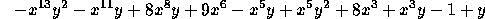

| The Errant Physicist |
The well-known physicist Alfred E Neuman is working on problems that involve multiplying polynomials of x and y. For example, he may need to calculate
getting the answer

Unfortunately, such problems are so trivial that the great man's mind keeps drifting off the job, and he gets the wrong answers. As a consequence, several nuclear warheads that he has designed have detonated prematurely, wiping out five major cities and a couple of rain forests.
You are to write a program to perform such multiplications and save the world.
The file of input data will contain pairs of lines, with each line containing no more than 80 characters. The final line of the input file contains a # as its first character. Each input line contains a polynomial written without spaces and without any explicit exponentiation operator. Exponents are positive non-zero unsigned integers. Coefficients are also integers, but may be negative. Both exponents and coefficients are less than or equal to 100 in magnitude. Each term contains at most one factor in x and one in y.
Your program must multiply each pair of polynomials in the input, and print each product on a pair of lines, the first line containing all the exponents, suitably positioned with respect to the rest of the information, which is in the line below.
The following rules control the output format:
-yx8+9x3-1+y x5y+1+x3 1 1 #
13 2 11 8 6 5 5 2 3 3 -x y - x y + 8x y + 9x - x y + x y + 8x + x y - 1 + y 1